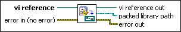
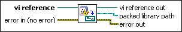

Packed Library Path VI
Owning Palette: Packed Library VIs
Requires: Base Development System
Returns the path to a packed project library for the VI you specify in vi reference.
 Add to the block diagram Add to the block diagram |
 Find on the palette Find on the palette |
Owning Palette: Packed Library VIs
Requires: Base Development System
Returns the path to a packed project library for the VI you specify in vi reference.
| Add to the block diagram |
Find on the palette |
 |
vi reference specifies the reference to a VI in a packed library. |
 |
error in describes error conditions that occur before this node runs. This input provides standard error in functionality. |
 |
vi reference out returns vi reference unchanged. |
 |
packed library path returns a path to the packed library that contains the VI you specify in vi reference. If the referenced VI is not in a packed library, packed library path returns an empty path. |
 |
error out contains error information. This output provides standard error out functionality. |